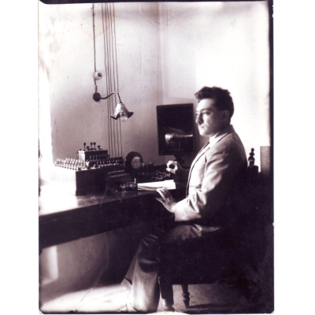
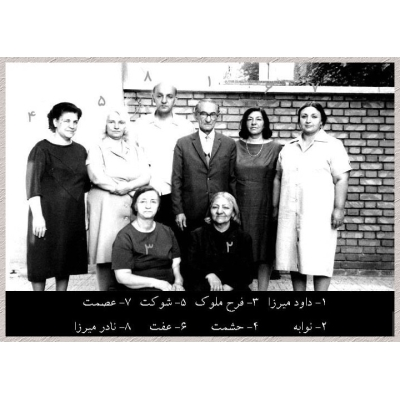
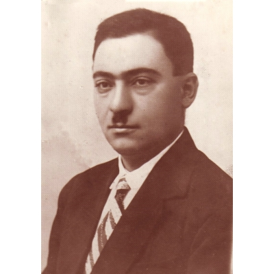
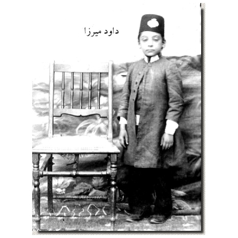

ان
خاندان افشار نادری
آرشیو تاریخ و تبار خانواده
خانه
آرشیو
گالری
آرشیو تصاویر
آلبوم تصاویر داود میرزا
تصاویر خانوادگی در نسخهٔ اصلی تارنما
تصاویر اصلی
13 تصویر
001 davoud 1336
002 davoud
003 davoud

004 davoud telegraph
005 davoud

006 8afshar
007 13.26.14
008 davoud

009 davoud

010 davoud
011 davoud
012 davoud
013 davoud 1303
اشعار داود میرزا ←
مشاهدهٔ تمام گالریها ←